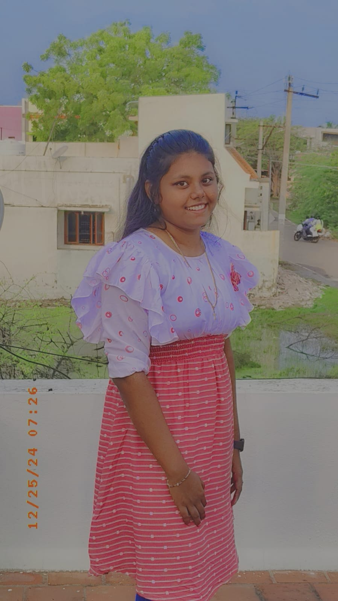

Hello! I'm Jenlin Anne Flora, currently pursuing my 2nd year in Electronics and Communication Engineering (ECE) at Loyola-ICAM College of Engineering and Technology (LICET), Chennai.
I'm a curious and passionate learner who loves to explore new innovations in technology. Outside academics, I dive deep into interests that help me grow as a creative and well-rounded individual.
I enjoy playing badminton—it keeps me active and helps build discipline. I also find peace in gardening, nurturing plants and watching them bloom brings me joy.
I'm a proud solo traveler. I love exploring new places, meeting new people, and embracing the unknown. Whether it's a quiet beach or a bustling city, I find freedom and growth in every journey.
I believe in staying grounded, embracing mindfulness, and finding balance in life. I love deep conversations, spontaneous adventures, and peaceful coffee moments.
I’m always evolving — as a student, a thinker, and a human being. I'm excited about the opportunities that lie ahead and ready to embrace the journey.
Program: B.E. in Electronics and Communication Engineering (2023–2027)
Current CGPA: 9.5 / 10
Pushpalatha Vidya Mandir(CBSE),Tirunelveli (2021–2023)
12th Grade Percentile: 93%
I studied in 8 different schools due to frequent relocations. Each school helped me grow, adapt, and understand different cultures and learning environments. Some of them include:
An interactive VR app to improve peripheral vision using eye-tracking and voice commands. Users focus centrally while detecting peripheral objects, with difficulty levels, performance tracking, and gaze alarms.
Tech Stack: Unity (VR), OpenCV, Python, TensorFlow, Eye-tracking APIs, Voice Recognition
🔗 GitHub RepoBuilt with ESP32-CAM for real-time object detection (YOLOv8) and text recognition (Tesseract-OCR), with speech feedback and voice commands. Optimized for PC processing using WebSocket for better accuracy and low latency.
Tech Stack: ESP32-CAM, YOLOv8, Tesseract-OCR, Google TTS, Speech Recognition
🔗 GitHub Repo
Autonomous debris collection using Arduino Uno, GPS, motor drivers, and solar-powered conveyor system. Bluetooth-controlled and designed for land-water mobility.
Tech Stack: Arduino Uno, GPS, Motor Drivers, Sensors, Bluetooth, Solar Power
🔗 GitHub RepoHandwriting-to-text device with Braille input, audio feedback, and offline support for blind and deaf students. Includes OCR and TTS for enhanced accessibility.
Tech Stack: Arduino, Raspberry Pi, OCR, Text-to-Speech, Braille Display, Embedded C
🔗 GitHub RepoSensor-enabled dustbin for touchless operation, IoT-based real-time waste monitoring, and energy-efficient automation.
Tech Stack: Arduino, Ultrasonic Sensors, IoT, ESP8266, Servo Motors
🔗 GitHub RepoLet's connect! Whether you have a question, a project, or just want to say hi, feel free to reach out 😊